最終講義
bit.ly/123haru
紙の資料は教室の入口付近にあります。
左のQRコードを読み取るか， 上のURLを開くと
スライドをブラウザーで閲覧、もしくは、 PDFファイルをダウンロードすることが可能です。
“A Model of Growth through Creative Destruction”,
（創造的破壊による経済成長）
P. Aghion and P. Howitt, 1992, Econometrica
2025年ノーベル経済学賞
博士論文（Oxford）の指導教員がAghion先生
「Grossman and Helpmanは？」と思ってる人に
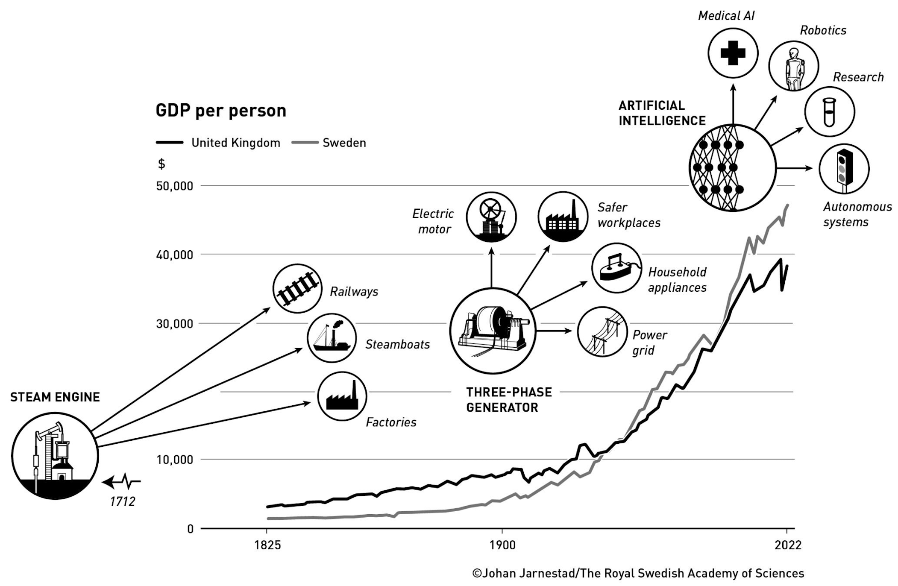
出典：2025年ノーベル経済学賞プレスリリース
技術水準のはしご
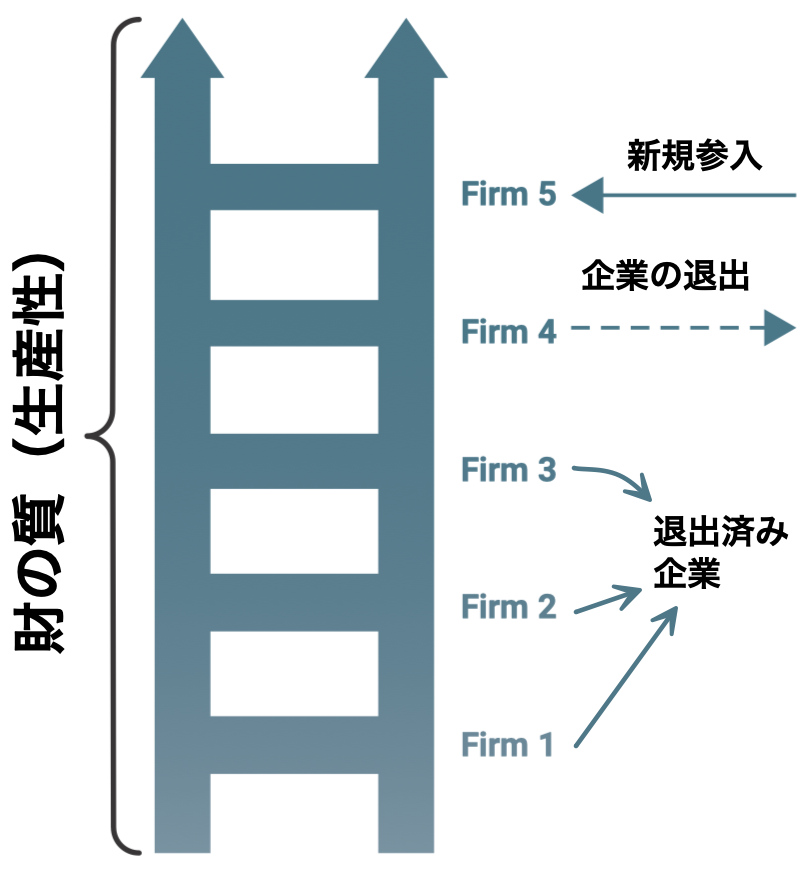
出典：The Middle-Income Trap, 2024, the World Bank
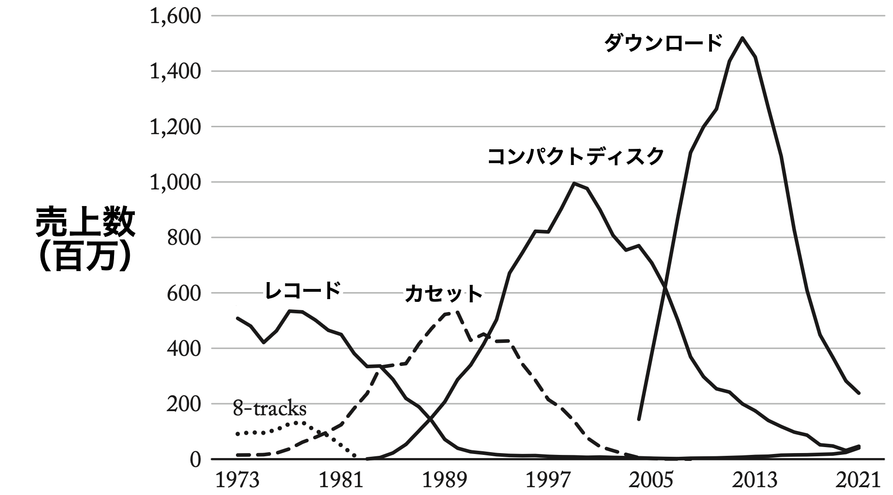
出典：Creative Destruction, 2024, Cato Institute
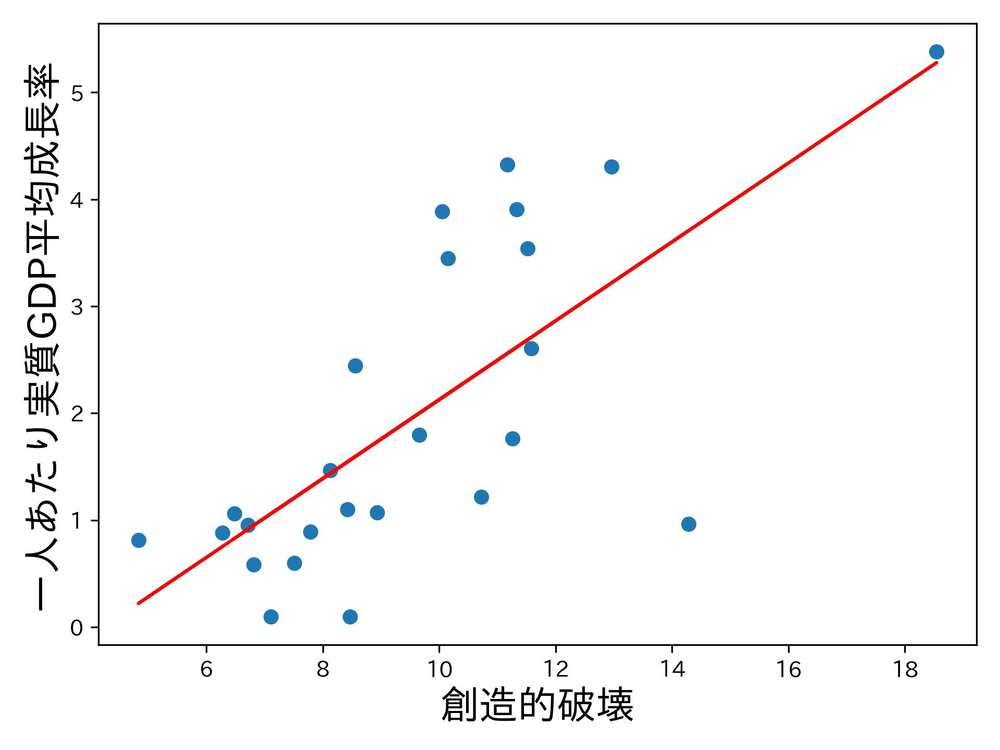
2011〜2019年
欧州25カ国
横軸：
企業参入率と退出率の平均
データ：Eurostat
\(N\uparrow\) \(\Rightarrow\) 今の利潤\(\downarrow\) \(\Rightarrow\) R&D投資\(\downarrow\)
\(N\uparrow\) \(\Rightarrow\) 今の利潤\(\downarrow\) \(\Rightarrow\) R&D投資\(\color{red}{\boldsymbol\uparrow}\)
\(\because\) 将来の利潤\(\uparrow\)のために（マラソン）
中所得国：US名目GNIの\(1.5\% \sim 18\%\)
（名目GNI＝名目GDP＋海外からの所得の純受取）
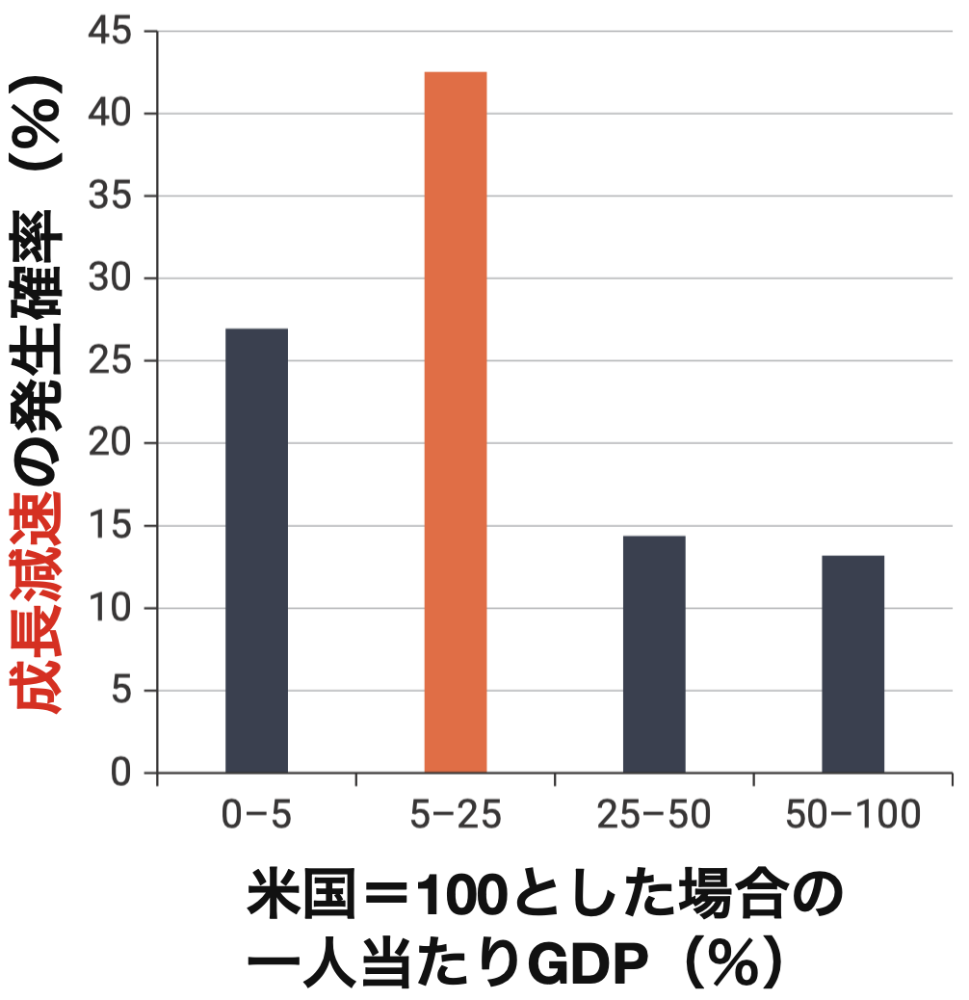
1972〜2010年、69カ国
Slowdown = 統計学的に成長率に負の構造変化が発生
縦軸 = 各階級である国がある年にSlowdownに該当する割合
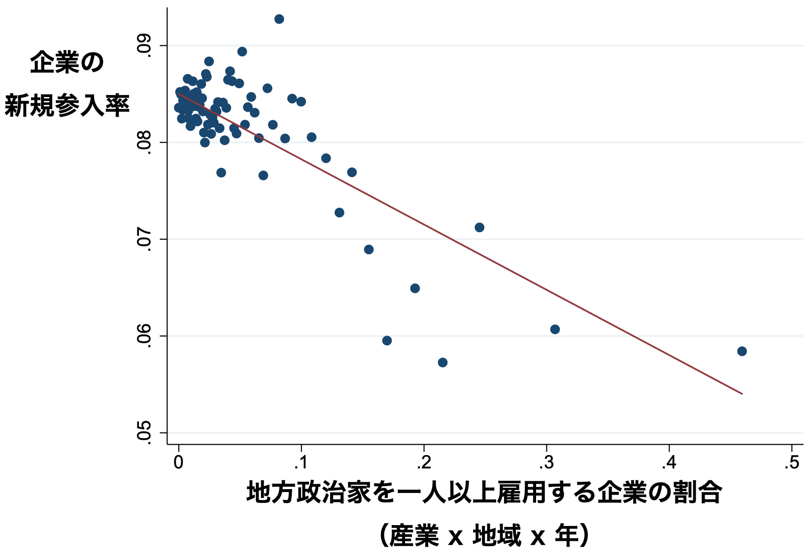
出典：Connecting to Power: Political Connections, Innovation, and Firm Dynamics, Akcigit et. al, 2018, NBER No25136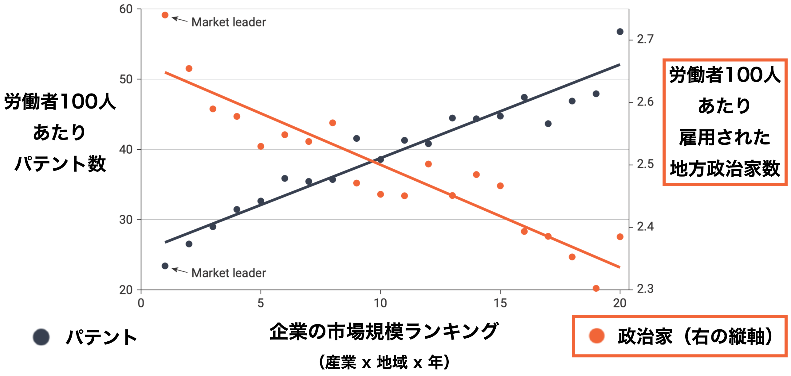
出典：Connecting to Power: Political Connections, Innovation, and Firm Dynamics, Akcigit et. al, 2023, Econometrica「見かけの位置」とは
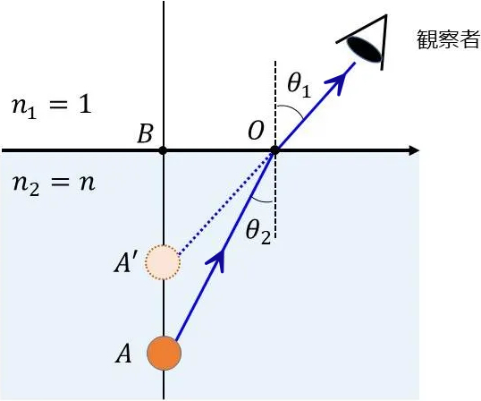
シュンペーター的成長理論に基づき、
日本の失われた30年を再解釈する
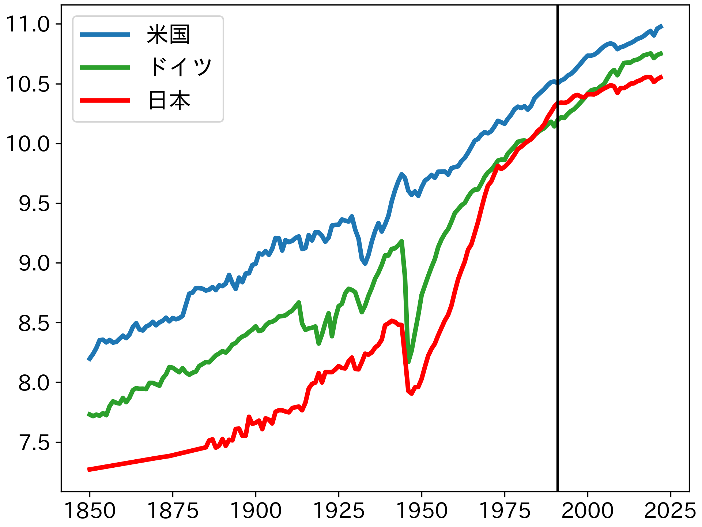
期間 |
平均成長率 |
一人当たりGDPが2倍に なるために 必要な期間 |
|---|---|---|
| 1946〜1971年 | 7.27% | 9.88年 |
| 1971〜1991年 | 3.33% | 21.13年 |
| 1991〜2022年 | 0.70% | 99.52年 |
データ：Maddison Project Database 2020
Penn World Table 11.0（1950〜）を使っても概ね同じような結果
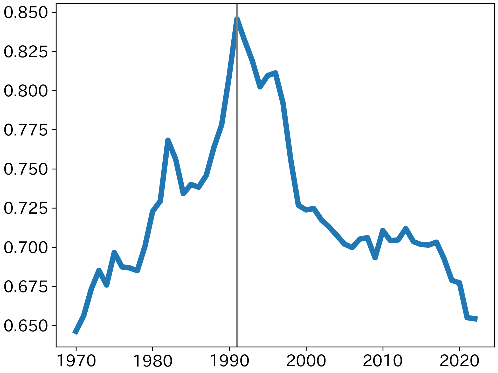
Penn World Table 11.0を使っても概ね同じような結果
世界のGDPに対して日本のGDPが占める割合（％）
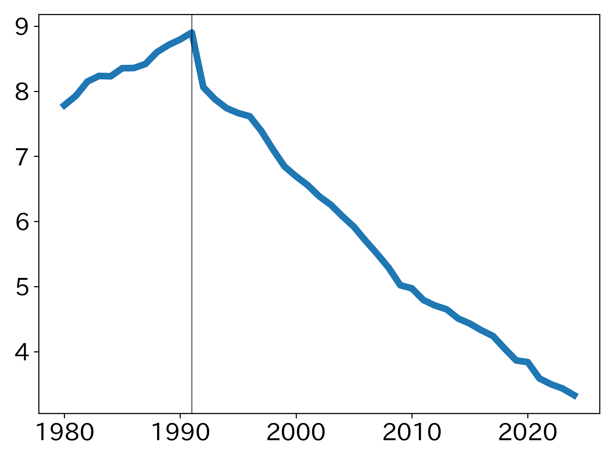
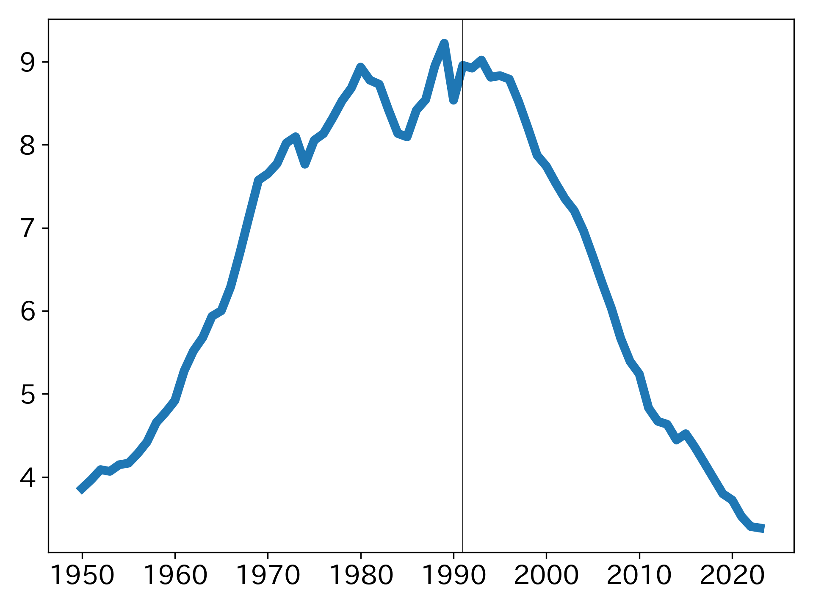
バランスシート悪化 → ゾンビ企業🧟♂️増加 → TFP低下
→ デフレ圧力 → 実質金利上昇
人口高齢化、企業ガバナンス、金融政策、
低い創造的破壊率
外形的な繁栄や安定が維持されている一方で、イノベーション環境の変化に対応する適応力が徐々に低下し、創造的破壊への転換が困難になった制度を指す仮説
既存の説明との違い
| この報告（経済研究） | 事件の捜査 | |
|---|---|---|
| 起きたこと | 失われた30年 | 殺人事件 |
| 被害 | 成長率の停滞 | Aさん死亡 |
| 原因候補 | バランスシート不況など | 複数の容疑者 |
| 状況証拠 | データ・制度変化・歴史的事実 | アリバイ・動機・証言 |
| 仮説 |
資産価格↓ → 需要不足など 見かけの大木仮説 |
犯行シナリオ |
| 検証 | 理論とデータで説明できるか | 証拠と矛盾しないか |
| 目的 | 停滞メカニズムの理解 | 犯人特定 |
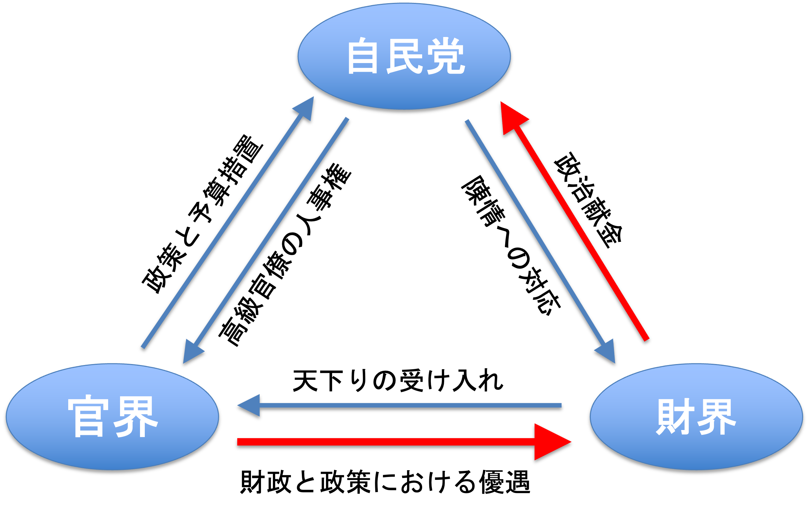
出典：『戦後日本の経済と社会』, 石原享一, 2015, 岩波書店
経済成長の
黄金のトライアングル
日本が大木へ育つ中心的メカニズム
利点：安定性
強いインセンティブ
問題：安定性
強いインセンティブ
レントシーキング活動を促進（赤い矢印）
企業による（独占）レント獲得・維持のための活動をいう。他企業の参入を阻止する行動や，政府による参入規制または輸入制限政策を実施・温存させるための政治的活動等が典型的。これらの多くは社会的な資源の浪費である。
（経済辞典、有斐閣、第５版）
トライアングルが結束しようとする強いインセンティブ
\(\Rightarrow\) 外性的ショックに耐える適応力の欠如
ストレステスト \(\Rightarrow\) 二つのショック
1990–1992：資産価格バブル崩壊
1997–1998：金融システム・ショック
（e.g. 山一證券の破綻とガバナンス問題）
含み損を確定しない（資産価格下落を帳簿に反映しない）
不良債権を過小評価（回収不能貸出を正常資産として扱う）
退出すべき企業に貸し出しゾンビ🧟♂️化させる
（デフォルト認定を回避し損失確定を遅らせる）
鉄のトライアングルを維持する強いインセンティブの結果
鉄のトライアングルの再編 → 存続
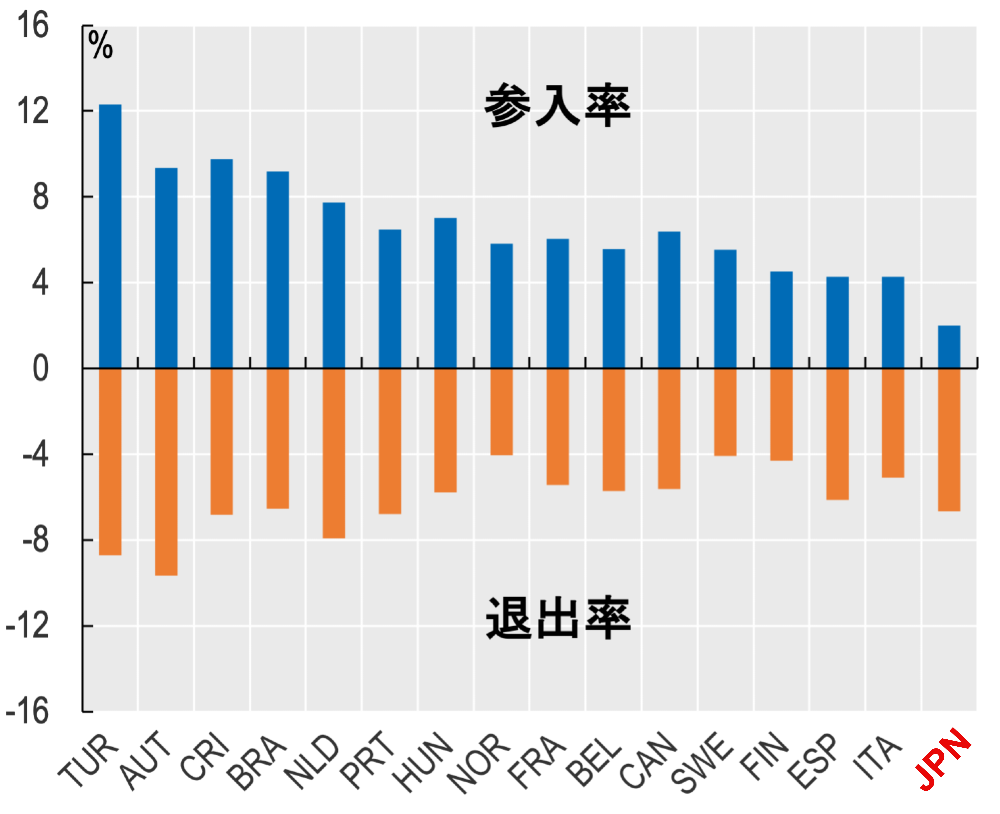
1998-2015年の平均
ゾンビ🧟♂️は自分の墓に戻ったが、街に人は戻らない状態
VCから資金提供を受けた企業数（2018-19年）
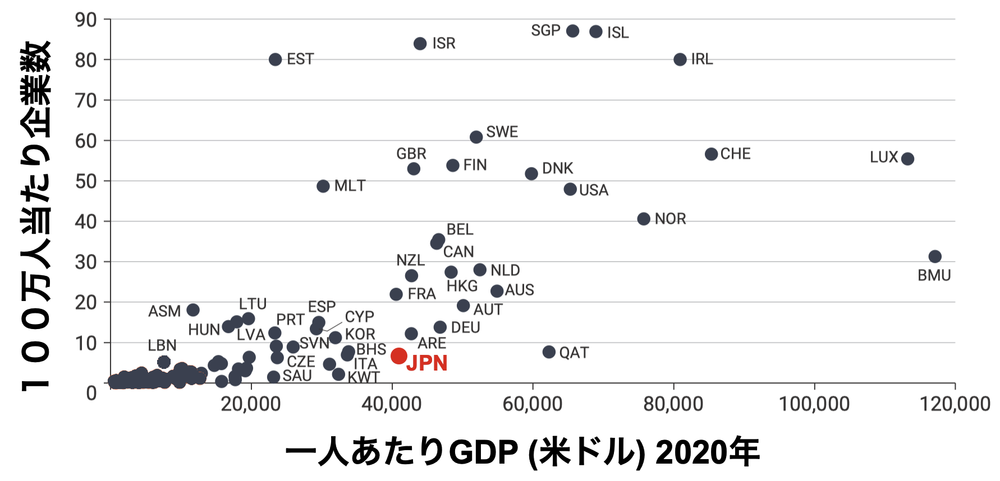
スタートアップが法的地位を取得するために必要な手続き
| 日本 | 米国 | タイ | 平均 | |
|---|---|---|---|---|
| 所要時間 | 26 | 4 | 35 | 47.4 |
| 費用 | 11.6% | 0.5% | 6.4% | 47.1% |
| 所要時間＋費用 | 22.0% | 1.7% | 20.4% | 66.0% |
| 一人当たりGDP | $32,230 | $30,600 | $8,490 | $8,226 |
出典：Djankov et al. (2002, QJE)
韓国と日本の経験もまた、この議論と整合的である。戦後の長期にわたり、韓国と日本はともに、大規模な投資・大規模コングロマリット・政府補助金・比較的保護された国内市場に依存することで、急速な成長とフロンティアへの収束を達成した。収束と成長は、日本では1980年代半ばに終焉を迎えた……（p.41、脚注2の翻訳）
鉄のトライアングル自体の創造的破壊が必要
22年間ありがとうございました。